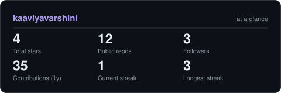

This is me :)
Hi, I'm Kaaviya, an AI Engineer and Autonomous Systems Builder broadcasting from Chennai, India 🇮🇳.
I architect multi-agent systems, intelligent RAG pipelines, and self-hosted AI security tools that bridge human intent and machine execution.
- 🎓 SRM Institute of Science and Technology — B.Tech CSE with AI Specialization (CGPA: 9.88).
- 🤖 Multi-Agent Systems Architect — Built Nexus Solo, replacing a 10-person agency with 5 autonomous AI agents (Content, Trend, Crisis, Deal, Analytics) using Creator DNA ML profiling across 10 Indian languages.
- 🛡️ Autonomous Cyber Defense & Safety Systems — Built Sentinel (self-hosted AI threat forensics with Gemma-3 and DBSCAN) and deterministic zero-blackout hospital controllers (MicroGrid Simulator).
- 🔍 Clinical & Enterprise GenAI — Developed production RAG pipelines (End-to-End Medical Chatbot with LLaMA 2 & Pinecone) and natural language analytics (Text-to-SQL Gemini App).
- 🏆 National Recognition — AWS AI For Bharat (Qualified for Prototype Round, 30+ states), Microsoft Imagine Cup '25, and Smart India Hackathon (SIH '25).
- 🌱 My mission: Building high-precision, resilient AI applications that solve critical real-world infrastructure, security, and automation challenges.
- 💬 Talk to me about Agentic Workflows, LLM Orchestration, RAG Architectures & Cyber AI!
my perfect stack

signals
|

|

|
Numbers matter? ohhh yes.

🚀 featured projects
Live & animated fanned 3D deck · Click any card to explore repository

Built with precision & passion · @kaaviyavarshini